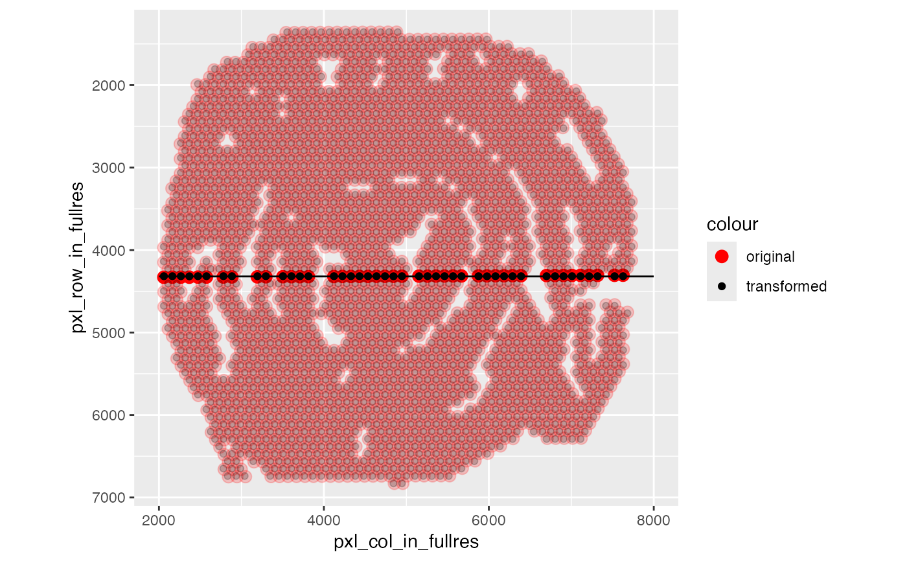

Find array transformation for Visium coordinates
get_array_rotation.RdThe Visium coordinates are either defined by their array position in a
grid or as pixel coordinates which map to a registered H&E image. The
Space Ranger pre-processing pipeline registers the coordinates to the
H&E image which can introduce rotations. get_array_rotation helps
calculating these rotation.
Usage
get_array_rotation(
object,
flip_x = FALSE,
flip_y = FALSE,
grid_pattern = c("hexagonal", "square"),
return_aligned_coords = FALSE,
verbose = TRUE
)Arguments
- object
An object of class
Seuratcreated withsemla- flip_x, flip_y
Logical specifying if the x- or y-axis is flipped
- grid_pattern
One of "hexagonal" or "square". Use "hexagonal" for VisiumV1 data
- return_aligned_coords
If TRUE, a list is returned with the rotation angle and the aligned coordinates
- verbose
Print messages
Algorithm
The first step is to take the array coordinates and the pixel coordinates and run center and scaling on both by subtracting the mean and dividing by the maximum radius. This will center the coordinates at (0, 0) and make sure that the coordinates share the same scale. As the two sets of points are paired, we can then use the Kabsch algorithm to find the rotation.
The coordinates might be flipped along the x- or y-axis in which case you can
use the flip_x, flip_y arguments to flip it back.
Examples
library(semla)
se_mcolon <- readRDS(system.file("extdata/mousecolon", "se_mcolon", package = "semla"))
# Compare coordinates
# Note that the array coordinates needs an additional transformation
# for VisiumV1 data since the grid is arranged in a hexagonal pattern
coords <- GetCoordinates(se_mcolon) |>
mutate(y = y*sqrt(3)) # Scale y values for hexaognal grids
p1 <- ggplot(coords, aes(x, y)) + geom_point() +
scale_y_reverse() + coord_fixed()
p2 <- ggplot(coords, aes(pxl_col_in_fullres, pxl_row_in_fullres)) +
geom_point() + scale_y_reverse() + coord_fixed()
p1 + p2
# The rotation between the two sets of coordinates is sutble,
# but we can find it with get_array_rotation
rotation_angle <- get_array_rotation(se_mcolon, grid_pattern = "hexagonal")
#> ℹ Finding rotation angle for sample 1
#> → Scaling array coordinates
#> → Scaling pixel coordinates
#> → Running Kabsch algorithm
#> → The rotation angle between the array and pixel coordinates is 0.254 degrees
# generate transforms
transforms <- generate_rigid_transform(sampleID = 1L, angle = rotation_angle$`1`)
# Load H&E images
se_mcolon <- LoadImages(se_mcolon)
#>
#> ── Loading H&E images ──
#>
#> ℹ Loading image from /private/var/folders/z8/nrcst881607gn95xh3_4qvb00000gp/T/RtmpAdeL2K/temp_libpath109e41827971/semla/extdata/mousecolon/spatial/tissue_lowres_image.jpg
#> ℹ Scaled image from 541x600 to 400x444 pixels
#> ℹ Saving loaded H&E images as 'rasters' in Seurat object
# Apply rotations
se_mcolon <- RigidTransformImages(se_mcolon, transforms = transforms)
#>
#> ── Transforming images ──
#>
#> ℹ Found transformations for sample(s): 1
#> ℹ Transforming image 1
#> ℹ Fetched spot coordinates
#> ℹ Supplied transformations are valid
#> → Mirror along x-axis: FALSE
#> → Mirror along y-axis: FALSE
#> → Rotation angle: 0.25
#> → Translation along x axis: 0%
#> → Translation along y axis: 0%
#> → Scaling factor: 1
#> ✔ Returning transformed image
#> ℹ Image transformation complete.
# Plot coordinates
coords <- GetCoordinates(se_mcolon) |>
mutate(alpha = case_when(between(x = pxl_row_in_fullres_transformed,
left = 4280, right = 4360) ~ 1, TRUE ~ 0.2))
# The difference is quite subtle, but if you look closely you can see
# that the transformed coordinates (black) arranged in a square grid,
# whereas the original coordinates (red) are slighlty rotated
ggplot(coords) +
geom_point(aes(pxl_col_in_fullres, pxl_row_in_fullres, color = "original"),
size = 3, alpha = coords$alpha) +
geom_point(aes(pxl_col_in_fullres_transformed, pxl_row_in_fullres_transformed,
color = "transformed"),
alpha = coords$alpha) +
coord_fixed() +
scale_color_manual(values = c("original" = "red", "transformed" = "black")) +
scale_y_reverse() +
geom_segment(data = tibble(x = 2e3, xend = 8e3, y = 4320, yend = 4320),
aes(x = x, xend = xend, y = y, yend = yend))
